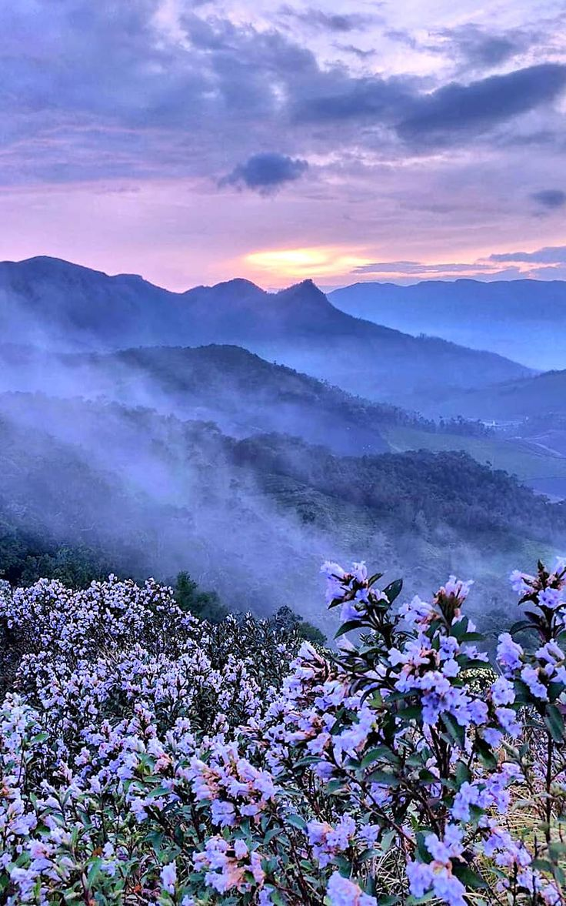
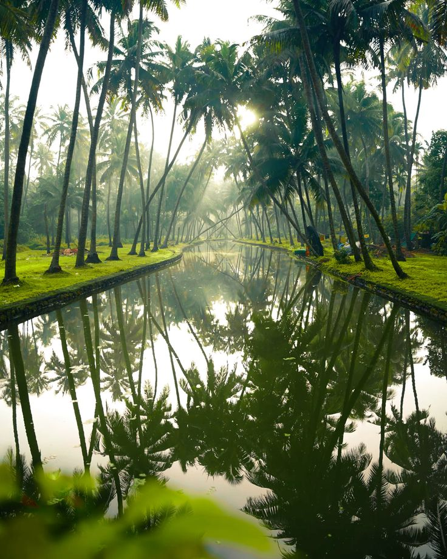
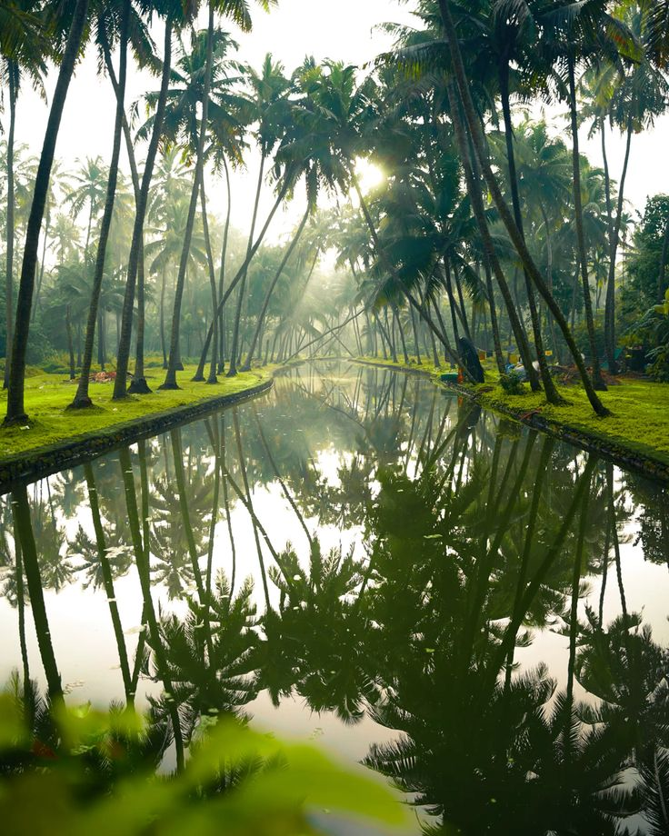

Kerala lies between the Arabian Sea in the West and the Western Ghats (Sahyadris) in the East with an area of 38863 sq km. It is one of the five states in the linguistic-cultural area known as South India. The neighbouring states of Kerala are Tamil Nadu and Karnataka.
 
